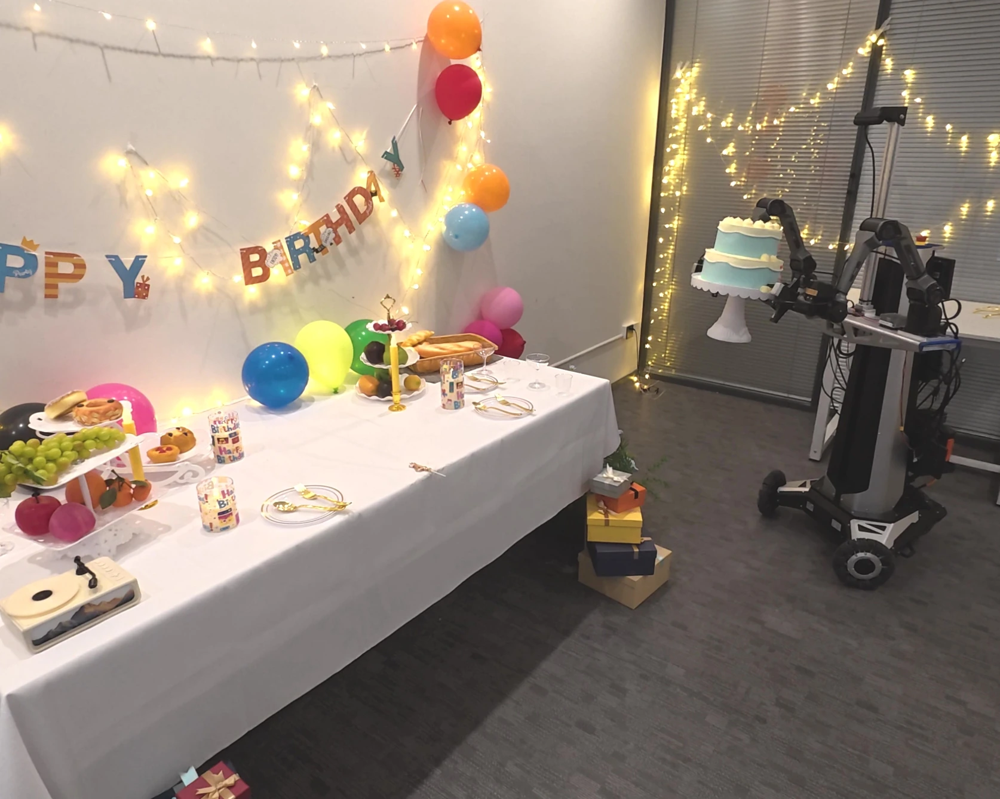
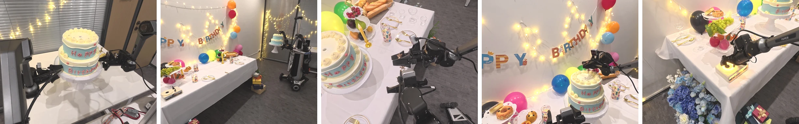

01DeepStack
Seeing.
For seeing, MM-ABC uses a sparse DeepStack interface that injects multi-level VLM features into the action expert, preserving complementary fine-grained and semantic information.

01 / Method
![Figure 2. MM-ABC architecture. Left: sparse VLM features condition MM-APT; a training-only future branch receives geometric supervision from frozen VGGT-Omega features. Middle: joint transformer blocks (MM-JiT in the diagram) combine stream-specific transformations with masked attention and read-only perceptual context. Right: action streams communicate within each segment, and far tokens additionally read near tokens. Future queries follow the same temporal ordering but remain isolated from actions.](./assets/images/architecture.svg)
For seeing, MM-ABC uses a sparse DeepStack interface that injects multi-level VLM features into the action expert, preserving complementary fine-grained and semantic information.
For coordinating, we introduce the Mobile Manipulation Action Prediction Transformer (MM-APT), which maintains separate manipulation and mobile/body streams while enabling cross-stream interaction through masked joint attention.
For imagining, learnable future queries predict geometry-rich representations at sparse horizons under a frozen geometric teacher, capturing workspace evolution and the geometric intent the policy should realize.
02 / Benchmarks
Success rate (%)
44.71%
We post-train MM-ABC for 100k steps with a batch size of 512. We evaluate a single checkpoint on the official held-out test split, reporting task success and stage-wise progress.
03 / Real world
The robot picks up a cake from the table directly ahead, carries it to the decorated table on the left, and sets it down. It then picks up a birthday candle, passes it between its two hands, and inserts it into the cake. Finally, it moves beside the table and turns on the speaker to play music.

04 / Dataset

To complement public datasets, we collect MM-30, a real-world mobile manipulation dataset with coordinated base, lift, and dual-arm motion.

05 / Citation
MM-ABC: Towards Generalist Mobile Manipulation via Seeing, Coordinating and Imagining
@misc{liang2026mmabc,
title = {MM-ABC: Towards Generalist Mobile Manipulation
via Seeing, Coordinating and Imagining},
author = {Liang, Qiwei and Chen, Guangyu and
Zhu, Shaolong and Xiao, Zikuan and
Lu, Jinxuan and Xie, Yifan and Xu, Renjing and
Ding, Wenbo and Chen, Tianxing},
year = {2026},
url = {https://mm-abc.github.io/}
}